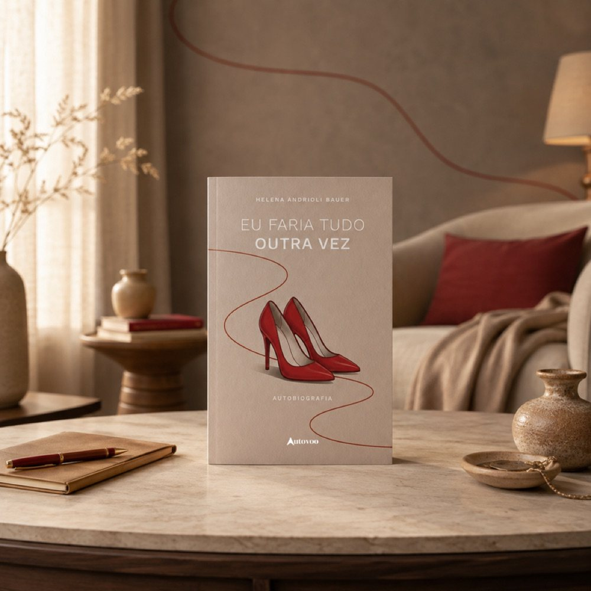
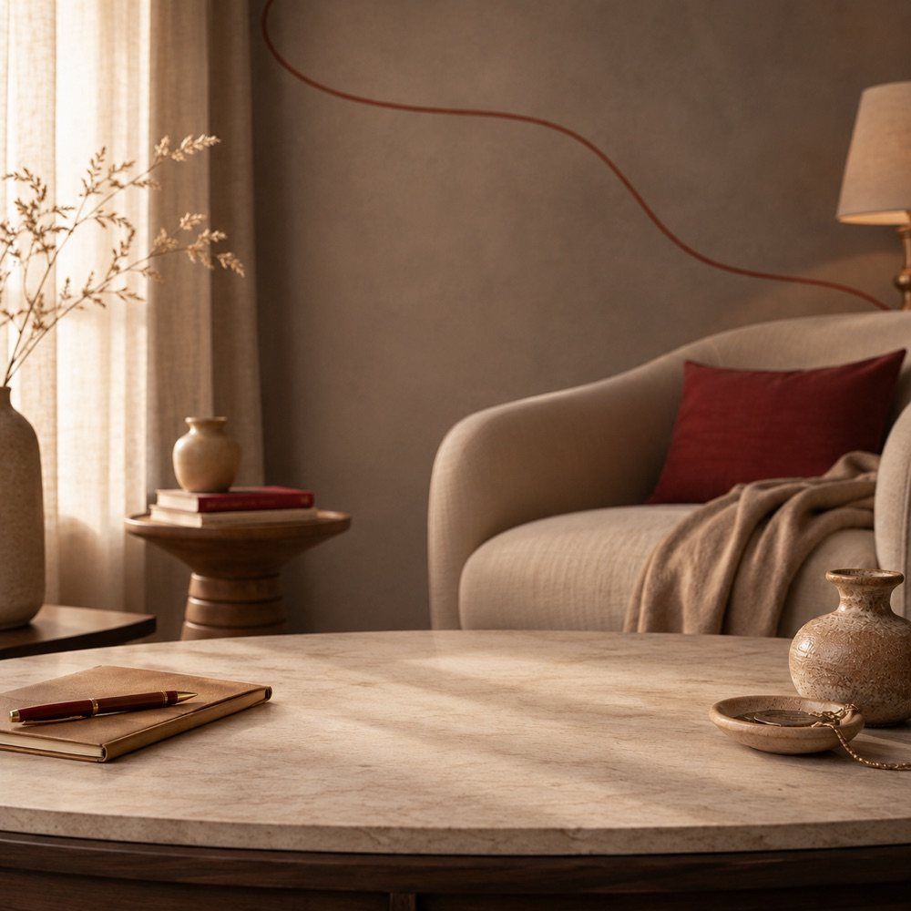

Helena Andrioli Bauer
Eu faria tudo outra vez
Uma história real sobre fé, coragem, perseverança e esperança.
Uma vida construída entre desafios, escolhas, conquistas e recomeços. E a certeza de que, mesmo diante das dificuldades, sempre existe um caminho para seguir em frente.
Adquira o seu exemplarUma vida inteira para contar. Uma história para inspirar.
Algumas histórias são feitas de grandes acontecimentos. Outras ganham força justamente nos detalhes: nas dificuldades enfrentadas, nas escolhas difíceis, nas pessoas que caminham ao nosso lado e na coragem necessária para continuar.
Em Eu Faria Tudo Outra Vez, Helena Andrioli Bauer revisita sua própria trajetória, desde uma infância simples no interior do Rio Grande do Sul até os desafios e conquistas de uma carreira construída ao longo de décadas. Entre experiências pessoais e profissionais, a autora compartilha aprendizados que ajudaram a moldar sua maneira de enxergar a vida.
A narrativa também abre espaço para uma história de amor atravessada por dificuldades inesperadas, uma experiência que exige paciência, coragem e fé. Mais do que reunir memórias, o livro convida o leitor a olhar para a própria caminhada e perceber como cada desafio pode carregar um aprendizado.
Uma história verdadeira, escrita com sinceridade, para lembrar que a vida nem sempre segue o caminho que imaginamos. Mas ainda assim pode nos levar a lugares que jamais esqueceremos.
Por que esta história merece ser lida?
Uma história real, sem idealizações
Helena compartilha experiências vividas ao longo de sua trajetória, mostrando que superar dificuldades não significa ter uma vida sem problemas, mas encontrar forças para continuar.
Fé e esperança diante dos desafios
A espiritualidade e os valores familiares atravessam a narrativa e ajudam a construir uma reflexão sobre coragem, perseverança e esperança.
Uma leitura para olhar a própria vida de outra maneira
Ao revisitar suas escolhas, conquistas e dificuldades, a autora convida o leitor a refletir sobre seus próprios caminhos e sobre aquilo que dá significado a uma vida bem vivida.

Sobre a autora
Helena Andrioli Bauer
Amante dos livros e, agora, também autora, Helena Andrioli Bauer decidiu transformar sua própria trajetória em registro depois de encerrar sua carreira profissional. O que começou como uma forma de preservar memórias para os filhos e para a família ganhou um novo propósito: compartilhar experiências que pudessem alcançar e inspirar outras pessoas.
Nascida em 1961, em uma pequena cidade do interior do Rio Grande do Sul, Helena construiu uma trajetória profissional diversificada e, nos últimos 25 anos de carreira, atuou como executiva em uma empresa inglesa de importação de calçados. Atualmente aposentada, encontrou na escrita uma nova maneira de revisitar momentos marcantes de sua caminhada.
Eu Faria Tudo Outra Vez é sua primeira publicação.
E se você pudesse olhar para sua própria história com gratidão?
Eu Faria Tudo Outra Vez é um convite para percorrer uma vida marcada por desafios, escolhas, amor, trabalho, fé e perseverança. E para descobrir que até os caminhos mais difíceis podem deixar aprendizados que permanecem.
Uma história para quem acredita que sempre há uma saída.
Adquira o seu exemplar